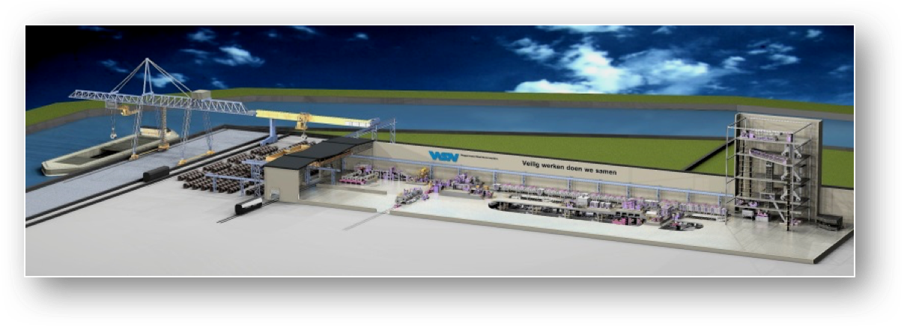
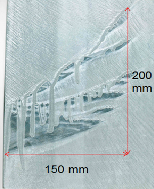

Anomaly detection within a time series of web behaviour data
LittleData provides simpler insight and actionable analytics to help managers improve online conversion.
Online customer experience is now the primary basis for competition for 89% of companies surveyed by Gartner. Yet while businesses spend heavily on web development, consulting and design services, the tools they use to guide these improvements have not kept up – they provide way too much data for a non-technical manager to digest. As an alternative to hiring expensive human analysts to interpret the web traffic data, we aim to highlight the changes with the greatest commercial impact.

Website usage (pages viewed, clicks, products purchased) shows strong daily and weekly cycles, so the question our clients need answering is: what is the probability that a given period is an anomaly worthy of further investigation, rather than following the usual pattern? E.g. Is a sudden drop in ecommerce conversion rate due to an uncaught bug in the checkout process, or is a rise in average pages views per session a result of acquiring more engaged users.
We have a historical training data set from 250 high-traffic websites, with a few dozen interesting events annotated. A further 3000 websites could also be queried via Google Analytics. We would like to develop an algorithm that works across a large variety of website types (ecommerce, brochure, social network etc) and industry sectors, and takes into account changes in behaviour in analogous websites over the same time period.
The first version of our algorithm uses Holt-Winters smoothing to make a prediction for a given metric given past data, and then a Bayesian approach to determine how improbable that the prediction is different from the actual result. But we are open to any technique which helps sort signal from noise.
"Bananas": Modelling and investigation of defects occurring in steel galvanisation process
Wuppermann AG, based in Germany, is an innovative steel product developer and an expert in processing and finishing of steel. The Wuppermann range extends from flat products, tubes, and sheet metal parts to integrated components and complex assemblies made of steel, stainless steel, and aluminum.

Wuppermann Staal Nederland, based in the Netherlands, is the largest and most modern production site in the Flat Products Business Unit. Based in Moerdijk, the Netherlands, it boasts an integrated wide-strip pickling and galvanizing plant for maximum coil widths of 1550 mm, thus completing the range of flat products supplied by the Wuppermann Group. Hot-dip galvanized wide strip and slit strip produced in Moerdijk is delivered by boat, train and truck to customers throughout Europe and the USA.
Steel is galvanized to protect it from rusting. Our ever-changing markets are demanding for better rust-protection, which means that the zinc layer to apply to the steel is getting thicker and thicker. In Moerdijk, this zinc layer is applied using the principle of hot-dip galvanizing. Basically the strip is welded to an infinitely long strip and is produced in our line, the heart of the operation is a zinc pot containing 175 metric tons of liquid zinc. The strip is guided into this zinc pot. Submerged, and upon leaving the bath the excess zinc layer is wiped clear by a set of air-knives, obtaining the desirable zinc layer thickness.

During the production of thicker zinc layers (to enhance the rust-protection) on wide strip we encounter a problem, which internally has been classified as “bananas”. Bananas are, like the name states, banana-like defects which only occur near the edge of the strip. The zinc layer seems to creep upwards (against gravity) and sag again, leaving bare-spots with drips of an extremely thick zinc layer. The defects seem to occur randomly and we do not understand the physical background of the problem. The defect leads to a lot of rejections and therefore we would like to have more insight into this problem.

The desired result of this project would be a theoretical model describing the origin of the banana defect. We would like to know which variables are at play and how we can mechanically influence them to suppress these defects in our product and satisfy our customers.

Calibration Routine for Inertial Measurement Unit (IMU) Without Physical Manipulation in Varying Environments
Ashgrove Analytics has developed a device for reporting the attitude of an object in 3D space to the cloud.
Among the components of device is a set of sensors required to periodically report orientations of the object over a period of 10 years – expected IMU lifespan. Ideally, the device should be entirely self-calibrating, with minimal handling required during installation.
The location of the object varies greatly, with access significantly restricted. Firstly, the device will be deployed globally, meaning that operation must be unaffected by, or at least adaptable to environmental extremes of climate, temperature, weather conditions etc. Secondly, factors particular to accurate operation of the IMU will also vary widely: the amount of metal in each location for instance and varying magnetic fields (possible locations include electricity substations, police stations where short wave radio is used intensively, proximity to the telecom hardware emitting an RF field etc.).
We are using the Bosch BNO055 IMU currently.
Interpreting Data
The BNO055 will start supplying sensor data as soon as it is powered on. As the unit is moved, calibration values increase from 0 to 3, 3 signifying full calibration. System, Gyro, Accel and Magnet are calibration variables. Bosch has not disclosed how these are calculated and this is also a part of the challenge. Ashgrove Analytics will provide the raw sensor data in the form of Euler Angles, Unit Quaternions, and Rotation Vectors. The sensors are factory trimmed to reasonably tight offsets, meaning you can get valid data even before the calibration process is complete, but you should discard data as long as the system calibration status is '0' if you have the choice. The reason is that '0' means that the device has not yet found the 'north pole', and orientation values will be off.
Example of the calibrated IMU (the variables Gyro, Accel and Magnet in the green oval are equal to 3):


We would like a Study Group to develop a calibration routine that can be run without physically manipulating the device and can compensate for a changing environment. The accuracy of readings in each axis required is: +/- 0.5° for x-axis, +/- 2° for y-axis, the best effort for z-axis. Data derived from historic calibration routines can be stored locally on a chip and used for comparison purposes if required.
Optimal partitioning of large distributed databases to minimise data storage costs and computational time
Think Biosolution is developing technologies which use smartphone cameras for continuous noninvasive monitoring of health-related parameters. This information is coupled with deep learning algorithms to provide meaningful analysis and forecast the user’s wellbeing. Our first products are PulseR™ -- an Android / iOS application that can accurately estimate the heart rate (pulse) and respiratory rate from the video of a user’s face and QuasaR™ -- an Android /iOS application, which allows the user to measure SpO2 (Blood Oxygen Saturation), pulse and respiratory rate using an added smartphone camera case fitted to an armband. By combining these data with information about a user’s movement and position on the map, we can predict expected cardiovascular and respiratory parameters. Presently we are patenting technology to enable a smartphone camera to detect additional health-related parameters like blood hemoglobin and CO levels and planning to integrate a number of open technologies, like non-contact EEG monitoring, ear based thermometers, cuff-less blood pressure monitoring, etc, to offer our customers multiple solutions in accordance with their needs.

The data collected from the users will be stored in protected cloud-based databases. However, as we scale to a very large number of users, each has a personal solution consisting of one or more products offered by our company. Each product is thus gathering user data at different rates, so it becomes a challenging task to store and access the data efficiently.
The challenge proposed to ESGI is to build an automatic tool (i.e. develop an algorithm) that will help a system architect to efficiently partition the database to minimize the data storage costs and computational time to retrieve and analyse the data. The company will provide the study group with datasets for testing and validation of their approach.

The expected deliverables are:
- Task 1. A mathematical (analytic) model that can predict the data storage costs, and computational costs related to retrieving data from the dataset split into m tables, each with nm rows.
- Task 2. An algorithm to systematically partition the dataset. The output will be iteratively fed to the mathematical model developed in Task 1 to compute the cost of storing/retrieving/mining the data.

Developing of the control system algorithm for Artificial Pancreas for Type 1 diabetics
Diabetes Management
Type 1 diabetes mellitus is characterized by loss of the insulin-producing beta cells of the islets of Langerhans in the pancreas, leading to insulin deficiency. It typically happens to young children and sometimes called Juvenile Diabetes, but can happen at any age and it is a lifelong condition. In normal blood, sugar level would be between 4 and 5 mmol/L, but in a diabetic it can range from 2 to 20+ mmol/L. In theory, anything over 14-15 mmol/L is a medical emergency.

For good management of the Type 1 diabetes, we need to avoid Hyperglycaemia (sugar level is too high) and hypoglycaemia (too low). Having the sugar level too high can cause cardiovascular disease, kidney damage (nephropathy), eye damage (retinopathy) and multiple other health conditions. If the sugar level is too low, this can cause a coma and the dreaded “dead in bed” syndrome.
For people with diabetes, haemoglobin HbA1c is an important indicator of good health. The greater the HbA1c, the greater the risk of developing diabetes-related complications.

The term HbA1c refers to glycated haemoglobin. It develops when haemoglobin, a protein within red blood cells that carries oxygen throughout your body, joins with glucose in the blood, becoming 'glycated'. By measuring glycated haemoglobin (HbA1c), clinicians are able to get an overall picture of what our average blood sugar levels have been over a period of weeks/months.
There are two methods for Type 1 diabetes management.
#1 Current Method (40 million people) @ 4 times per day:
This method involves finger pricks and insulin injections. We (and most diabetics) use an open loop system described below with different degrees of success. Basal is the background insulin and the Bolus is the insulin you take for food. To calculate a Bolus we use the following approach:

In this example, Bg = Current Blood Glucose = 10.5 (just measured), 7 mmol/L is the target, 3.5 is the insulin sensitivity, 40 carb is the about of carb in 266g of Porridge, 10 is the Insulin carb ratio for that time of day. IOB is insulin on board (0 in this case). You can decrease amounts by 20% if exercising. Bolus 20 minutes before eating to get best effect.


#2 OpenAPS (70 people) @ 300 times per day:
The Open Artificial Pancreas System (OpenAPS) is a simplified Artificial Pancreas System (APS) designed to automatically adjust an insulin pump’s basal insulin delivery to keep blood glucose (BG) in a safe range overnight and between meals. It does this by communicating with an insulin pump to obtain details of all recent insulin dosing (basal and boluses), by communicating with a Continuous Glucose Monitor (CGM) to obtain current and recent BG estimates, and by issuing commands to the insulin pump to adjust temporary basal rates as needed. OpenAPS differs from other APS currently in clinical trials in two significant ways:
- First, it is designed to use existing approved medical devices, off-shelf hardware, and open source software.
- Secondly, it is designed primarily for safety, simplicity, and interoperability with existing treatment approaches as well as existing devices.

Current Algorithm / Adjustment Process
OpenAPS uses the pump’s bolus and temporary basal history, combined with the pump’s DIA (duration-ins-action) and published IOB (insulin-on-board) curves, to calculate current net IOB. Currently, pumps only include boluses when calculating IOB. A more accurate and useful IOB calculation includes the net impact of temporary basals vs. normally scheduled basal rates. If no boluses have been administered recently (see “Bolus Snooze” below), OpenAPS can then use the current CGM glucose reading to calculate an eventual BG estimate using simple bolus calculator math: current BG – (ISF * IOB) = eventual BG. If current BG is below a configured threshold (defaulting to 30mg/dL below the target range), OpenAPS enters low glucose suspend mode, and simply continues to issue 30-minute temp basals to zero as long as BG is not rising. Otherwise, OpenAPS determines whether the eventual BG is projected to be above or below the target range, and makes note of whether the CGM glucose readings are currently rising or falling more than expected. This helps ensure that the patient will always be able to recover from any excessive insulin delivered by OpenAPS simply by eating fast-acting carbs. The OpenAPS is simply a few rules put together which make a good enough AP. Note 20% in accuracy is typical across most/all equipment is the norm.
The challenge for the Study Group is to come with the Method #3: Open APS ++
The goal is to improve the Control Algorithm and adapt it to the person’s own body and history. It might possibly include a Fuzzy Logic Controller and Self Learning network to allow for the time of day changes in Insulin Sensitivity and Carb Ratios. Of the 14 implementations to date of an AP 11 use proportional–integral–derivative (PID) controllers with limited success) while the 3 other are employing a mix of Fuzzy Logic and Neural Networks. There is also the possibility of introducing wearable devices, like fitness trackers.

Mathematical modelling of a slurry storage tank underflow
Rusal Aughinish are aiming to increase the throughput of their slurry storage tanks (approximately 10m diameter, 12m height).
One of the areas of focus is the flow of solids through the tank underflow and ensuring that uniform flows report to the downstream processes. The solid-liquid mix (approx. 50% solids) enters the settling tank at the top and the solids settle to the cone-shaped bottom of the tank. The ideal situation is a steady outflow of high-solids mixture from the outlet at the base of the tank, and this is indeed observed under low-flow conditions. However, under the high-flow conditions typical of normal operation, the outflow density is not constant, but instead shows variations in density consistent with “slugs” of solids. It is suspected that solids are clogging the cone-shaped part of the tank, with “funnel flow” conditions occurring instead of the desired “mass flow” (see diagram). An analysis of this issue that leads to an improved understanding of the effects of tank geometry, surface roughness, particle size etc. upon the issue is desirable.
The study group is asked to analyse the problem and to recommend improvements to the current design of the slurry storage tank. Drawings and details of the dimensions, densities, particle size distribution etc. will be provided


Thermo-Electric Generator: Closed Two Phase Cooler
Distributed sensor networks will require low cost, low maintenance power supplies, which themselves are powered from energy sources in the environment. One promising technology harnesses the Seebeck effect whereby a voltage is generated when a temperature difference is maintained between sets of p-n junctions. Such a device is known as a Thermo-Electric Generator (TEG).
The scenario under consideration is to use a TEG attached to a domestic hot-water pipe as a power supply. The TEG is assumed to be "chip scale" with dimensions of the order ~3mm x3mm x 16um and thermal resistance ~10K/W. However, to optimise output power, the temperature drop across the TEG must be maximised. The problem we wish the Study Group to address is the feasibility of using a two phase fluid in a closed system to maintain the cold junctions of the TEG as close to ambient as possible.

Using the most general thermodynamic arguments we wish the Study Group to consider:
- Is such a system thermodynamically feasible and what performance/size enhancements might be expected compared to metallic cooling fins?
- What properties should the working fluid possess and what are the practical candidates for such a fluid?
- What pressure should the closed system work at?
- What size and shape should the vessel be?
- Can the system self-start and under what conditions?
- Such a system will need to move the liquid phase back to the evaporation site, how does the energy required to do this effect the efficiency of the system? Will it impact scale?
- Ideally, the hot-water pipe should be fully insulated with the TEG/Cooler puncturing the insulation thereby providing a leakage path. What would be the impact of using uninsulated pipes?
- Is it more appropriate to re-design the TEG to match constraints of a predefined heat-source (water-pipe) and working fluid?